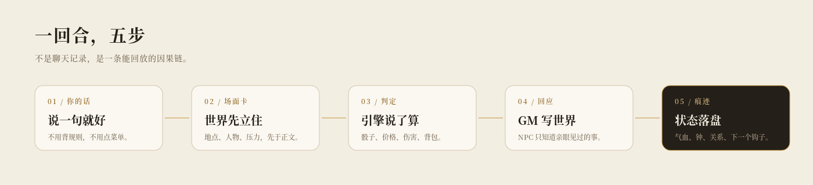
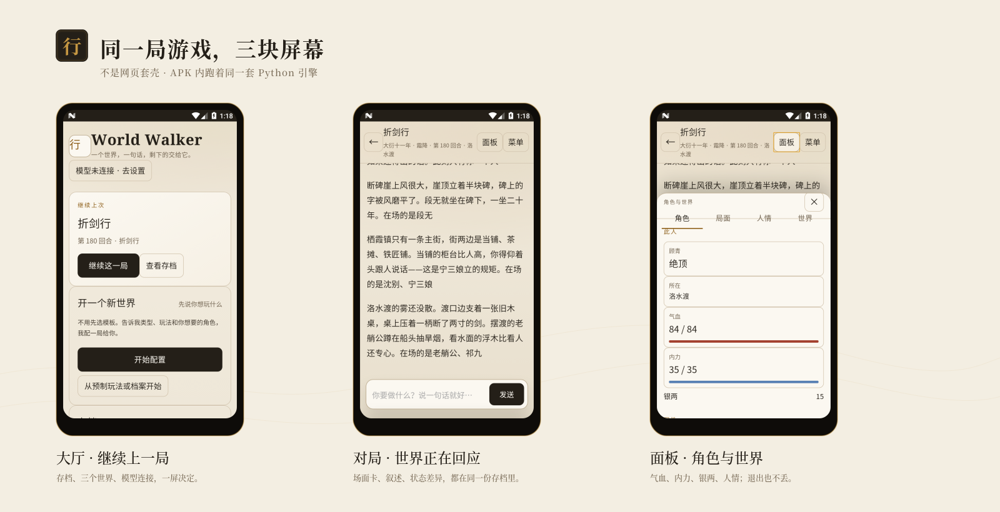

打开就能玩
本地页面 + 任意 OpenAI-compatible 模型。三张旗舰开局卡可以直接进；也可以先问类型、玩法、角色与体验，再给开局卡。不预写剧情。
规则引擎说了算
命中、伤害、价格、关系、因果都由确定性规则结算。模型负责叙述，不负责编数值。
把你的 AI 接进来
MCP 独立模式没有本地页面。外部 AI 自己当 GM，通过对话展示地点、人物与场面。
一回合，五步

不是聊天记录，是一条能回放的因果链。场面卡钉住压力，引擎结算数字，GM 写下世界的回应，状态文件收下代价。
三块屏幕，一份存档

大厅继续旧局，对局是叙事加一条安静的右栏，右栏收进手机底部的“面板”抽屉。回放、Markdown 战报和安卓 APK 读的都是同一份存档。
快速开始
pip install -e ".[mcp]"
wg mcp # stdio
wg mcp --http --port 8620模型不绑定厂商；base_url / api_key / model 都可以在配置里替换。
安卓版：把同一个引擎装进口袋
APK 内带同一套 Python 引擎，Chaquopy 在 App 进程里启动本地回环面板，WebView 只连 127.0.0.1。三档 ABI、签名 Release、下载落 Downloads/World Walker；右栏收进底部抽屉，返回键先收抽屉再回大厅。安装与构建见 docs/ANDROID.md。
看得见的状态变化
每段叙述下面都有本回合的气血、物品、压力钟与关系差异；菜单里能回看战报、导出 Markdown、把世界包交给另一台机器，或导出/导入角色卡。
两条入口，一套引擎
玩家页面和 MCP 模式共用同一套规则、存档与事务写入。MCP 模式不调用 open_panel，这是故意的：它应该看起来像一场纯对话，而不是仪表盘。